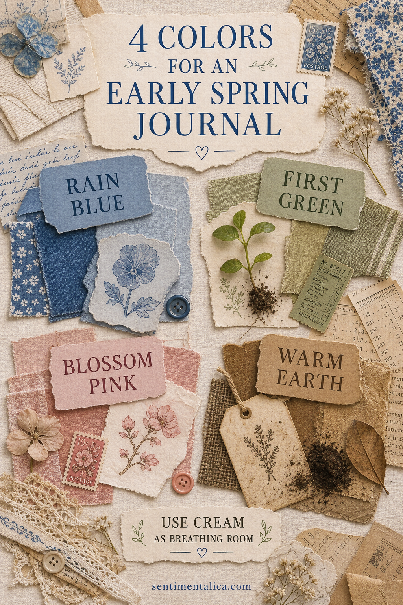
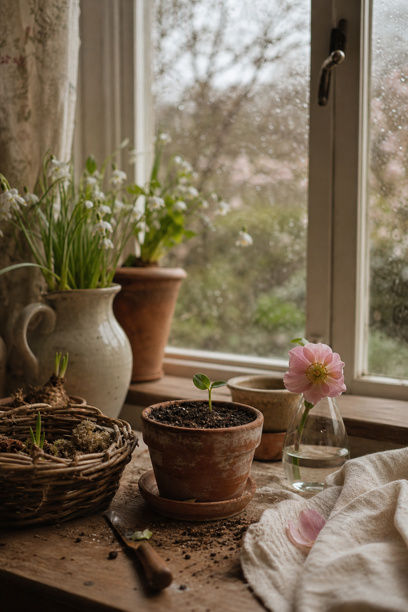

Early spring is not all bright flowers. It is wet sky, one new leaf, pale petals, and dark soil. Those four colors make a journal palette with enough contrast to feel alive and enough restraint to remain peaceful.

Rain blue sets the atmosphere
Choose a softened blue with a little gray. Use it for one medium-size paper, ribbon, or painted wash. Avoid scattering blue everywhere; one calm area gives the page its weather.
First green creates direction
A muted leaf green works best in a narrow shape: a stem, tab, torn strip, or small label. Point it toward the main image or writing area so the color also guides the eye.
Blossom pink is the accent
Keep pink to the smallest proportion. One pressed petal, stamp, thread knot, or paper corner is enough. Repeating it only once makes the accent feel chosen rather than sugary.

Warm earth anchors the page
Kraft, tea-stained paper, raw linen, and deep brown ink keep the light colors from floating away. Place the darkest brown near the lower edge or beneath the focal image.
Let cream occupy the most space
Use cream for the base and writing card. A useful ratio is roughly half cream, one quarter blue, then smaller amounts of green, brown, and pink. You do not need to measure; simply protect the pale open areas as you layer.
Test the palette with scraps
Arrange one piece of each color before starting. If two colors compete, mute one with tracing paper or reduce its size. Photograph the group and keep it beside you while choosing materials.
Build one focal cluster
Layer a blue rectangle over warm earth paper, add a slim green shape, then place the pink accent where the layers meet. This concentrates the seasonal colors in one readable area. Keep the opposite page mostly cream with writing and perhaps one repeated blue line.
Change texture before adding color
If the page feels flat, introduce linen, torn book paper, tissue, stitching, or a dry embossed surface. Texture adds interest without breaking the four-color rule. Choose materials that feel like the season: smooth translucent paper for rain, rough kraft for earth, and soft thread for blossom.
Correct a palette that feels too sweet
Reduce the pink, deepen the brown, and replace bright green with olive or gray-green. Black ink can provide a tiny sharp anchor. Avoid adding another color to solve the problem; adjusting value and proportion is usually enough.
Correct a palette that feels too muddy
Increase clean cream around the darker pieces and introduce one clearer patch of rain blue. Remove duplicate brown scraps. A pale base and one crisp edge can restore freshness without making the page look new or glossy.
This palette can follow spring from rain into blossom. Change the proportions rather than replacing every color: more earth at the beginning, more green later, and pink only when the garden offers it.
Image note: Some visuals in this article were created with AI and curated by Sentimentalica.